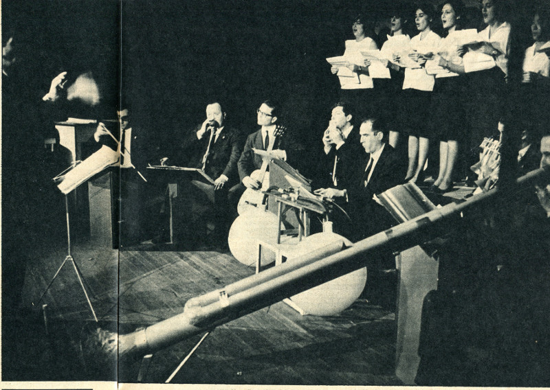

INSTRUMENTOS DE NOMBRES EXOTICOS Y DE INSTRUMEN-TISTAS DEL MISMO ESTILO. MUCHO INGENIO Y BUENA AFI-NACION PARA UN REFINADO PASATIEMPO MUSICAL. UNA PRESENTACION JUBILOSA DE GENTE QUE ENCARA LAS CO-SAS EN BROMA PERO CON SUFICIENTE SERIEDAD COMO PARA GUSTAR.
Hace no mucho tiempo, durante los festivales anuales de coros universitarios, algunos de sus integrantes preparaban números en farsa para las fiestas de clausura. Todos conocían música, todos tenían un refinado sentido del humor. Lentamente surgió la "orquesta de cámara I Musicisti". "conjunto de instrumentos informales", que reconoce en el arquitecto Gerardo Masana a su creador y más ferviente difusor. Había que inventar instrumentos, y Masana lo hizo. Todo el equipo se lanzó frenéticamente a recrear sonidos mediante artefactos de nombres restallantes y sonoridades —que de alguna manera hay que llamarlas— parecidas a lo conocido.
Estamos en un ensayo de los que hacen para sus próximos "conciertos" a realizarse en el Centro de Artes y Ciencias, Lavalle 770, los días 13, 14, 15 y 16 de junio. Masana nos presenta a los integrantes, sus "nombres artísticos", y los instrumentos que ejecutan. Carlos Nuñez, o Karl Mendelejeff Nuñez, concertista de piano, pero en serio; se recibe este año de licenciado en química. Toca el "tubófono parafínico cromático", o flauta Bunsen, construido con tubos de ensayo cuya afinación está dada con el agregado de parafina o plastilina en el fondo. Guillermo Marín, o Wilhem Von Marín, estudiante y empleado, es ejecutante del "yerbamatófono de luxe", un simple mate criollo al cual sopla sobre su agujero. ¡Y suena! Jorge Maronna es estudiante de medicina y hábil guitarrista. Con su falso nombre de Georg Welf Maronnen toca el "contrachitarrone da gamba", una guitarra cubierta con calcomanías florales y un pie, tipo violoncello, para tocar verticalmente. Joe Face Durante es, en realidad, el estudiante de ingeniería Daniel Duran. Su instrumento se llama "cornetófono d'amore", y está hecho con una serie de cornetitas de juguete, a las que agregó tubos plásticos de distinta longitud para dar afinación, rematados con embutidos que amplifican el sonido. También es estudiante de ingeniería Horacio López, o Criptoballenato López, tras el atril de su "generador de ondas López", que no es más que el clásico serrucho tocado con arco de violín. La "manguelódica pneumática" es un complicado aparato elaborado por el licenciado en química Raúl Puig, o Hanz Fritz Kurt von Puch. Básicamente es el instrumento conocido como "melódica", al cual llega el aire a través de mangueras desde dos enormes globos previamente inflados. Otro estudiante de ingeniería, también locutor de Radio Municipal, es Marcos Mundstock, o Mancupelánimas Mc Cormick. El "Gom-Horn" que ejecuta es una boquilla de trompeta conectada a un tubo plástico rematado por un embudo. Tiene dos modelos: en Fa y en Do. Durante el concierto figura un director, que con una sopapa de las que se usan para destapar cañerías marca a "sus músicos" él juego orquestal. Es Jorge Schusheim, o Giorgio Dichterliebe Winterreise, compositor de música para diversas representaciones teatrales de nuestro medio, y director, de veras, del coro "Cancionero de Upsala". En algunas obras intervienen voces, como la del estudiante de derecho Daniel Rabinovich, o Simje Berl Rabinovich, y el llamado Barítono chiche, interpretado por Marcos Mundstock, que a su vez presenta el espectáculo a través de un libreto lleno de hallazgos de humor. En la "Cantata Modaton", obra principal del repertorio de "I Musicisti", participa el "Coro estable del Cotolengo de Santa Eduviges", grupo vocal de veinte personas dedicado a cantar a las virtudes del Modatón que, según su autor, Johann Sebastián Masana, es un muy efectivo laxante.
Quizá ya esté en funciones para el próximo concierto el último invento de Masana: su "cello legüero". extraña simbiosis de un bombo criollo que sobre uno de sus parches, recibe el apoyo de un mango de violoncello, y se toca como tal, pero colgado del hombro, a la manera folklórica. Sin duda, su máxima creación es el "Bass pipe", fabuloso trombón de casi tres metros de longitud con varios tubos de diferente diámetro, deslizables uno dentro del otro, como en el trombón a vara, construido con los tubos sobre los cuales se enrollan las piezas de géneros para su venta.
No se puede describir con palabras lo que debe captarse con el oído y la vista. Nos vamos del ensayo con una indefinible sensación de regocijo. Todavía existe gente capaz de encarar cosas seriamente en broma. No ignoran que lo suyo tiene precedentes en otras partes del mundo, pero no aquí. Están preparando la ópera "Merlo, ciudad feliz". Tienen una sensibilidad musical a flor de piel. Además estudian y trabajan. Gracias, señores, por ser "I Musicisti".
EDUARDO LAGOS
Revista “Gente y la actualidad” N° 47 – junio 16 de 1966 – Págs. 18 y 19
